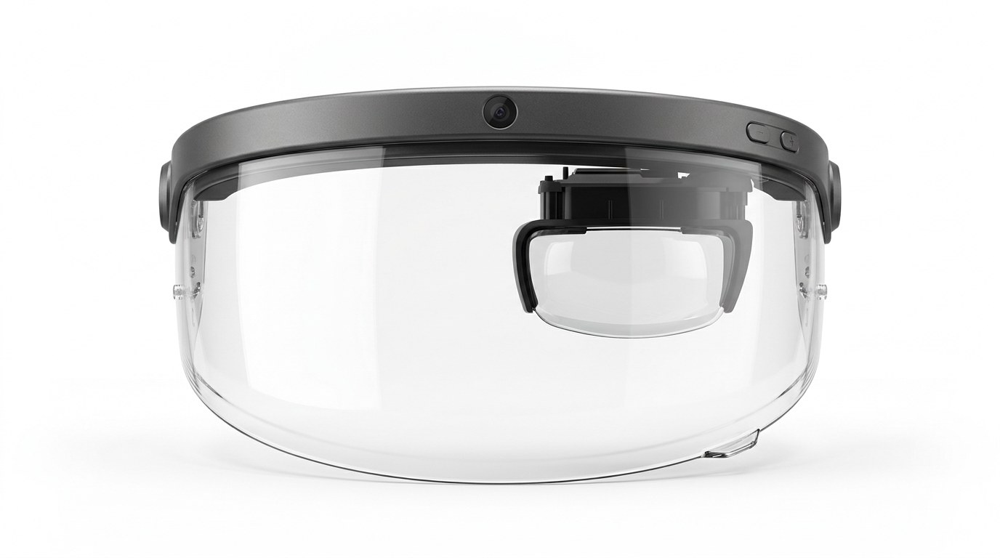
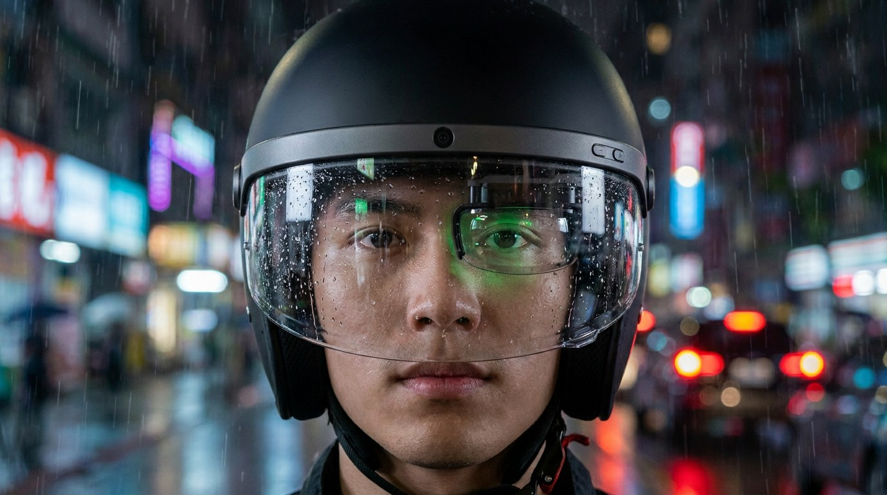
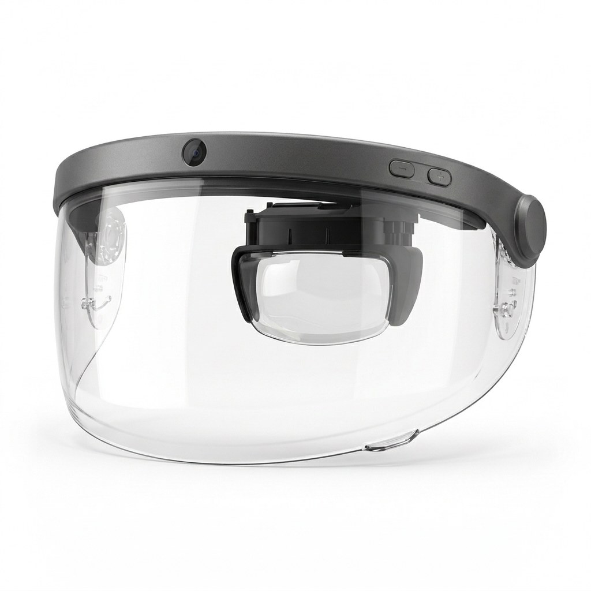
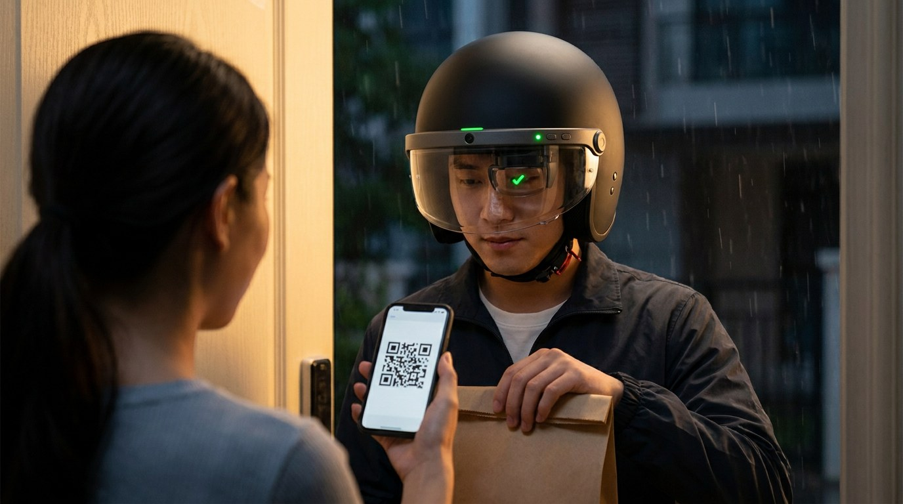
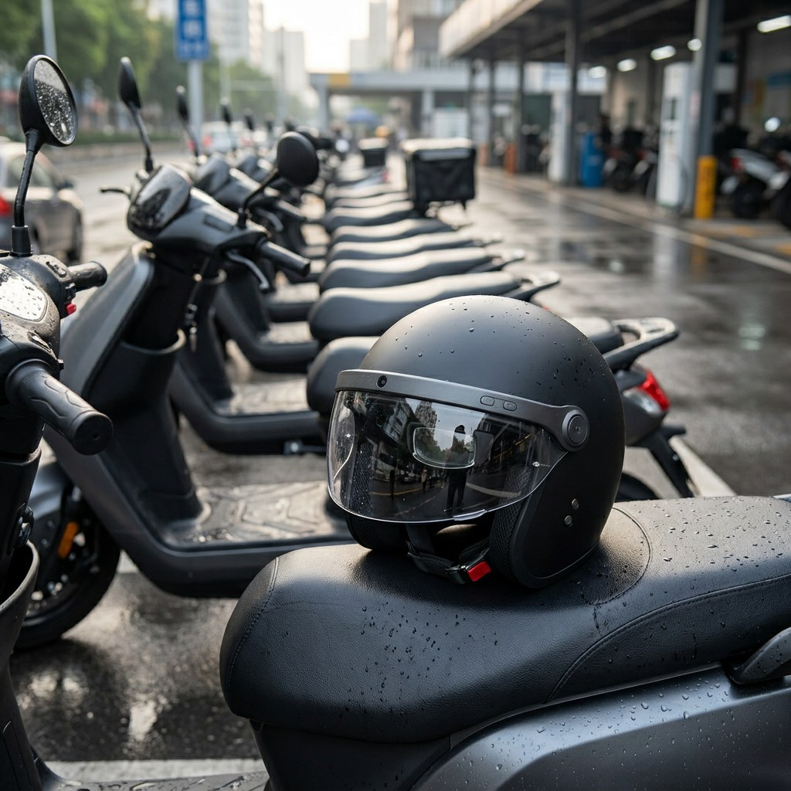

Introducing Spatial Visor, a smart visor for delivery riders and moto-taxi drivers
The Spatial Visor prototype puts a dashcam, turn-by-turn navigation and proof of delivery into the visor of a standard scooter helmet, so the rider’s phone stays in the pocket

PVF is developing Spatial Visor, a prototype of a replacement visor for the helmets that delivery riders and moto-taxi drivers already wear. It combines three devices a rider uses today: a dashcam, a phone for navigation and a scanner that confirms an order was picked up and delivered. On a typical order a rider checks the phone for the next turn, the address, the time left and the next incoming order, often while moving. Spatial Visor moves those things to the edge of the rider’s view and takes the rest by voice, so both hands stay on the handlebar and the eyes stay on the road.
The product is one part that can be bought as a single unit. It clips onto the helmet’s existing visor mounts and needs no change to the helmet shell. The phone keeps doing the computing; the visor shows, listens, speaks, scans and records.

Built Into the Visor
Everything lives in a slim graphite arc that runs along the top edge of the visor from hinge to hinge. A forward-facing camera sits in the centre. Two buttons sit on the outer side near the right hinge, where a gloved thumb finds them without looking. The battery and the main board share the arc, and the two round side mounts stay exactly where a standard visor has them.
Because the electronics travel with the visor, a fleet can fit Spatial Visor to the helmets it already owns and move it to a new helmet when the old one is retired.

A Display That Stays Out of the Way
The display is a birdbath optical module of the kind used in AR glasses: a micro-OLED panel on top and a curved see-through lens below it. The reference module from SeeYA Technology pairs a 0.49-inch or 0.6-inch panel with a 43 to 44 degree field of view.1 The image appears to float at a distance, so the rider does not refocus between the road and the display.
The interface is limited to four elements, in one colour:
- a map with the route, the next turn and the distance to it
- the time left on the current order
- the entrance and floor of the delivery address
- a new order, with accept and decline
Nothing else is shown while the scooter is moving.

Hands on the Handlebar
Riders talk to Spatial Visor instead of tapping a screen. A voice command accepts an order or calls the customer. The camera records the ride in a loop, like a dashcam, which gives riders and fleets a record when an accident or a dispute happens. Recording never stops while the visor is on, and every frame carries the speed, time and location.

Proof of Pickup and Delivery
Spatial Visor confirms each handover without a phone. At the restaurant the rider looks at the order’s QR code and the visor camera scans it: the order is marked as picked up. At the door the customer shows the QR code from their app, the visor scans it, a light on the arc turns green and the display shows “Delivered”. Both scans are stored with the time and place, so the platform, the rider and the customer see the same record.

For Moto-Taxi Drivers
The same visor works for moto-taxi. Navigation and trip details appear on the display, and the passenger confirms the start of the trip with a QR code. On top of that, Spatial Visor keeps a record of how the trip went. Motion sensors and the camera note speeding, hard braking, running a red light and phone use while riding, and build a riding score for each driver.3 If a passenger or a driver reports harassment or unsafe behaviour, the recording of that trip is there to review.
Part of a Family
Spatial Visor is designed as one piece of an ecosystem with smart glasses built on the same electronics and the same app. A rider wears the visor on the scooter and the glasses off it; orders, recordings and the riding history follow the person, not the device.
Proven Electronics
Spatial Visor does not start from a blank board. Its camera, audio and wireless come from a smart-glasses platform that is already in production: an 8 or 13 megapixel stabilised camera, two speakers, a microphone, Bluetooth LE 5.3 or 5.4 and a voice assistant that runs through a phone app.2 The glasses carry a 290 mAh battery sized for a frame; the arc of a visor has room for a cell that lasts a working shift.
What is new is the enclosure, the mount, the display module and the software that connects the visor to the rider’s delivery app.
